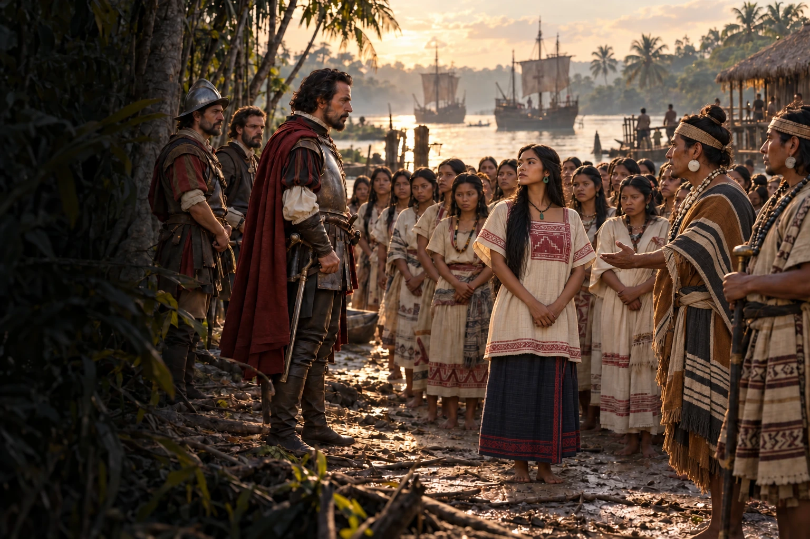

Audiolibros · Segunda Ola
Hernán Cortés · Segunda carta impresa: 1522
Cartas
de relación
Veinte mujeres. Un destino impuesto.
Tabasco, 1519. Entre ellas está Marina.
Su voz cambiará el curso de la conquista.

Escuchar lo que el poder quiere contar.
Grabación próximamente
Volumen
Las voces detrás de la relación
Escritas para Carlos V entre 1519 y 1526, estas relaciones no son una crónica neutral: Hernán Cortés narra la invasión, sus alianzas indígenas, el sitio de Mexico-Tenochtitlan y la formación del orden colonial mientras justifica ante la Corona su ruptura con Diego Velázquez y reclama autoridad sobre lo conquistado. La primera relación cortesiana se perdió; la carta del cabildo de la Villa Rica de la Vera Cruz, enviada en 1519, ocupa tradicionalmente su lugar.
La carta conserva la voz de quien manda; la imagen invita a mirar a quienes no pudieron elegir.
La imagen evoca un episodio de 1519 en Tabasco: la entrega a los españoles de veinte mujeres esclavizadas, entre ellas la que sería conocida como Marina o Malintzin. Su posterior labor como intérprete resultó decisiva para la conquista. El contexto de esta escena se apoya en otras crónicas y en estudios históricos; no reproduce un pasaje literal de las cartas de Cortés. La composición pone a las mujeres en primer plano sin convertir una entrega forzada en una celebración.
Redacción del conjunto: 1519–1526. La segunda carta, fechada en 1520, se imprimió en Sevilla en 1522; las otras relaciones tienen fechas de publicación distintas. Historia editorial · Biblioteca Nacional de España. Contexto de las cartas · UNAM. Las mujeres entregadas en Tabasco · UNAM. La imagen es una interpretación artística, no una reconstrucción exacta.
La lectura
Lectura completa
Grabación próximamente. La lectura de la obra estará disponible aquí. Las grabaciones se incorporarán cuando estén preparadas.
Valoración

Excelente